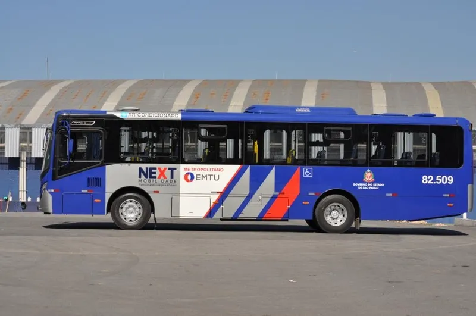
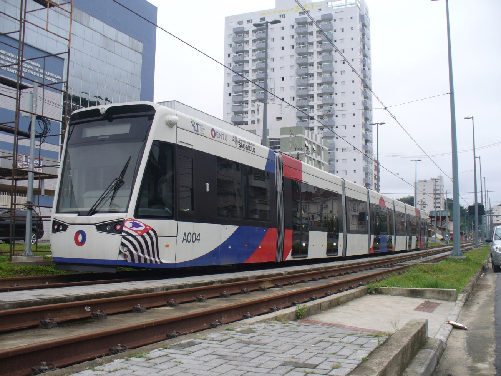
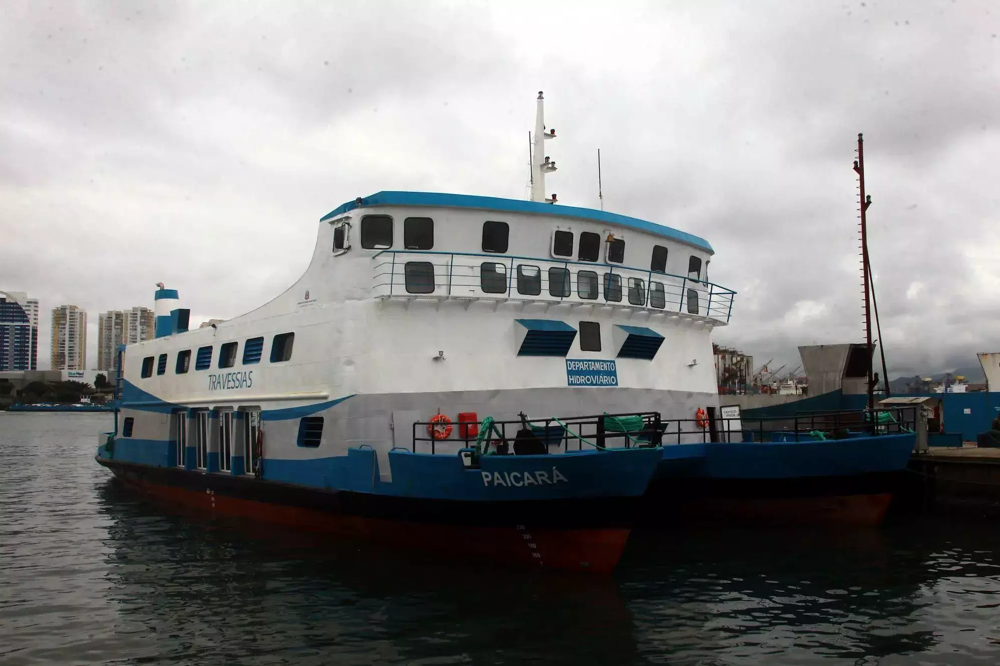

Sobre a Região
Região metropolitana no litoral do estado de São Paulo, a primeira região metropolitana brasileira sem status de capital estadual.
Sua região abrange 2 419,930 quilômetros quadrados com uma população de cerca de 1,8 milhão de moradores fixos, tendo sua densidade de quase 800 habitantes por quilômetro quadrado.
Cidades

Transporte na Região
O transporte na Baixada Santista opera sob uma lógica fragmentada: você tem ilhas conectadas por pontes, um sistema de ônibus municipal forte dentro de cada cidade, mas uma dependência crítica de corredores rodoviários únicos para a mobilidade intermunicipal, sem integração ferroviária direta entre os municípios litorâneos até o momento.
Ônibus Intermunicipais: A espinha dorsal que liga as nove cidades (Santos, São Vicente, Praia Grande, Guarujá, Cubatão, Itanhaém, Mongaguá, Peruíbe e Bertioga). Diferente de metrôs, não há tarifa única integrada automática entre todas as linhas; você muitas vezes paga ao entrar em um novo município ou usa cartões específicos da EMTU (Empresa Metropolitana de Transportes Urbanos). O fluxo é intenso nas pontes que ligam Santos a São Vicente e à Ilha de Santo Amaro (Guarujá).

VLT (Veículo Leve sobre Trilhos): Em operação em Santos desde 2016, é o único sistema sobre trilhos ativo no litoral. Com 10,8 km de extensão, liga o terminal rodoviário de Santos (Barreiros) ao Valongo, cruzando a zona intermediária. Ele não se conecta fisicamente ao sistema de trens da CPTM que vem da capital, funcionando como um distribuidor interno.

Barcas: Essenciais para a ligação entre Santos, São Vicente e Guarujá, operadas pela concessionária Barcas S/A. Para quem vai ao Guarujá de carro, a travessia pela balsa é obrigatória (ou o uso da Ponte Pênsil para pedestres/ciclistas), criando gargalos históricos nos fins de semana e feriados.Essenciais para a ligação entre Santos, São Vicente e Guarujá, operadas pela concessionária Barcas S/A. Para quem vai ao Guarujá de carro, a travessia pela balsa é obrigatória (ou o uso da Ponte Pênsil para pedestres/ciclistas), criando gargalos históricos nos fins de semana e feriados.
